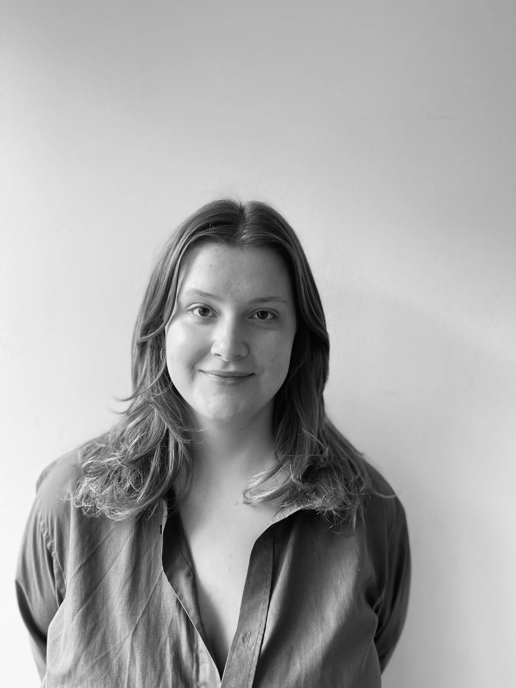
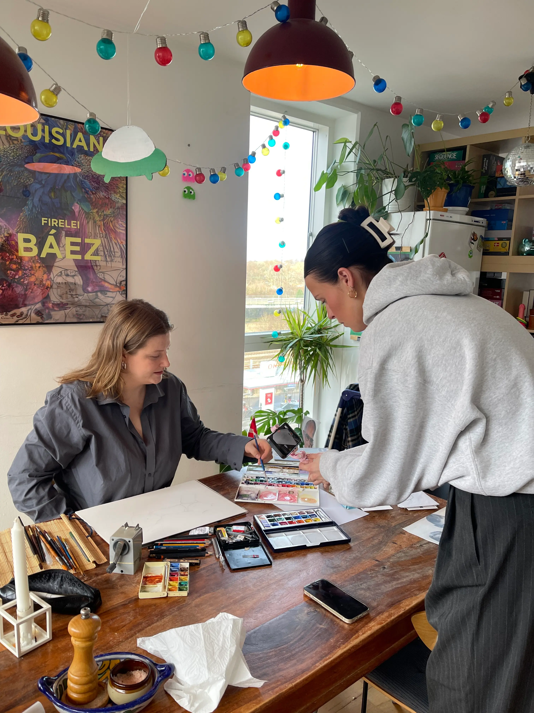
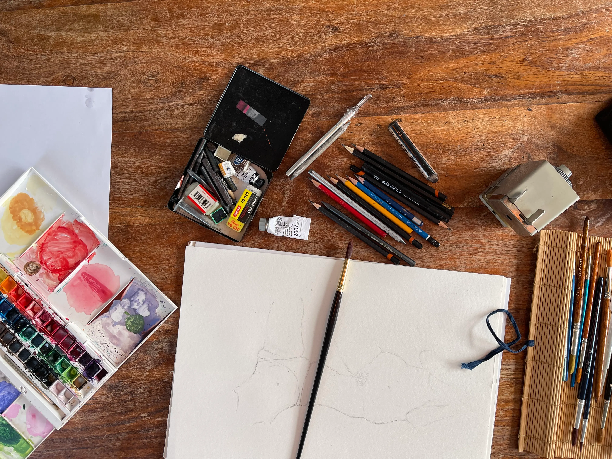
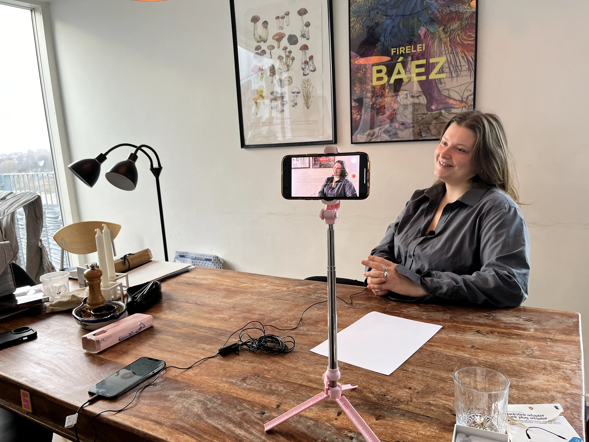
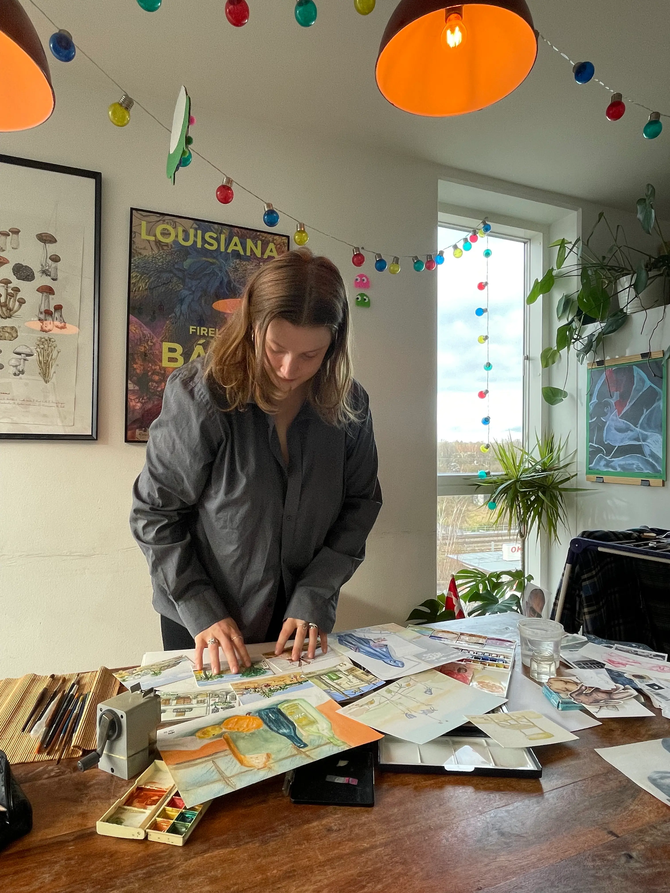

PENSELSTRØG AF PASSION, EN RETTELSE juhuu
THEAS AKVARELVERDEN
Mød Thea, en ung kvinde med en dyb passion for akvarelmaling. Hendes rejse ind i kunstens verden begyndte som barn, da hun tilbragte mange timer sammen med sin morfar, som var en dygtig maler og en stor inspirationskilde. Deres bånd var unikt, og det var i hans selskab, at Thea først opdagede glæden ved at male med akvarel.

KVINDEN BAG KUNSTEN
FORTÆLLINGEN OM THEA - FILMEN, PROCESSEN OG PASSIONEN



